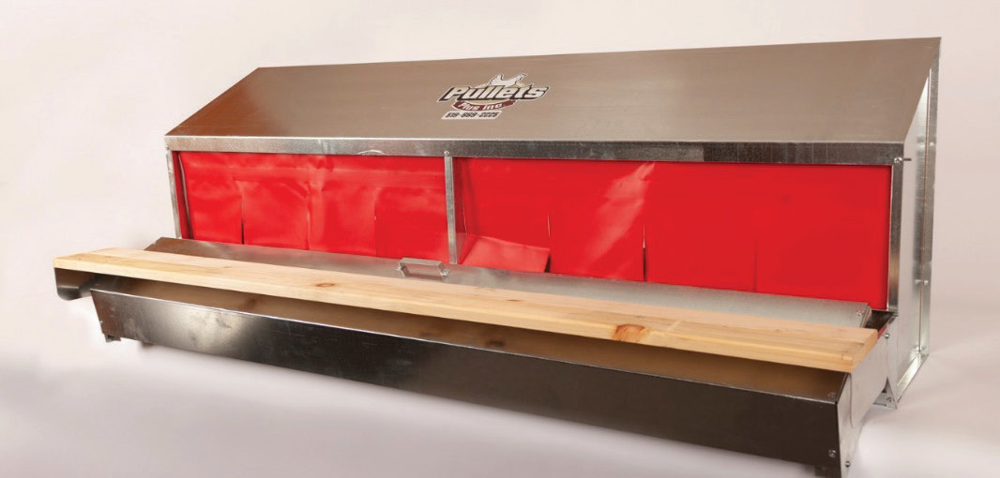
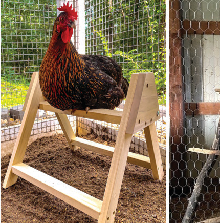
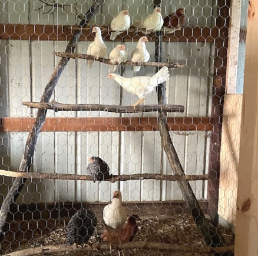

Figure 10.8 (b): Example of communal nest
Source: https://www.pulletsplus.com/wp-content/uploads/2019/03/Community-Nest.jpg
Perches:
Layer and dual-purpose chickens managed in systems other than cages have to preferably be equipped with perches. Perches are horizontal wooden bars or poles in chicken houses that birds use to sleep or sit on. Birds have a natural behaviour of roosting on higher places so perches provide them with the thing they like. The most popular perches used are 5 cm by 8 cm or 5 cm by 10 cm pieces placed on the edge with upper corners rounded. Each bird needs a perching space allowance of about 15 cm depending upon the breed. The perches should be placed 20 – 25 cm apart. Figure 10.9 shows examples of perches.


Figure 10.9: Examples of perches